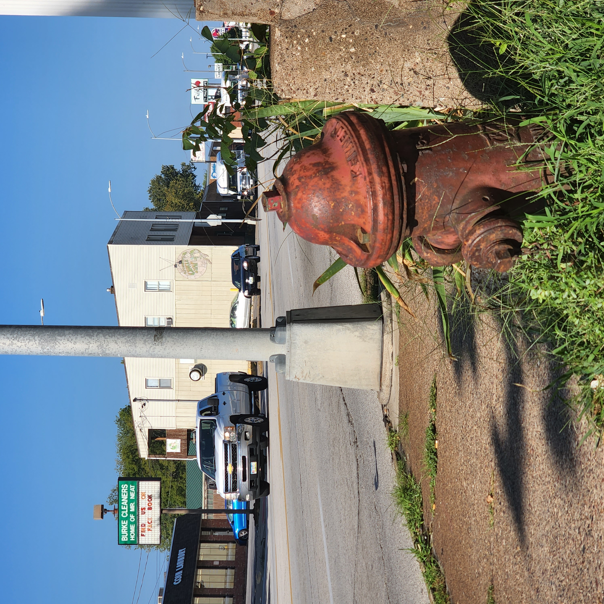
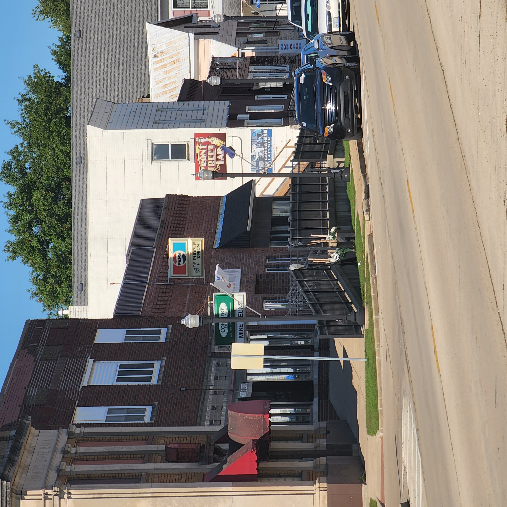
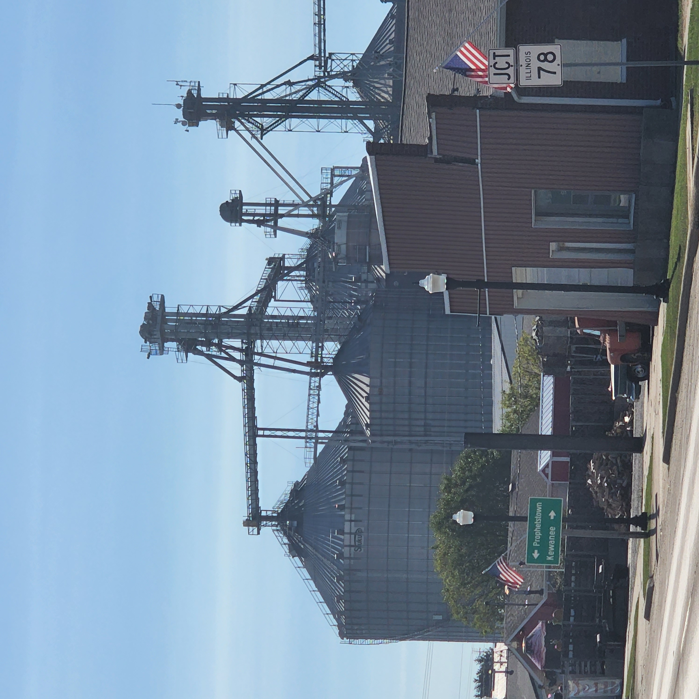
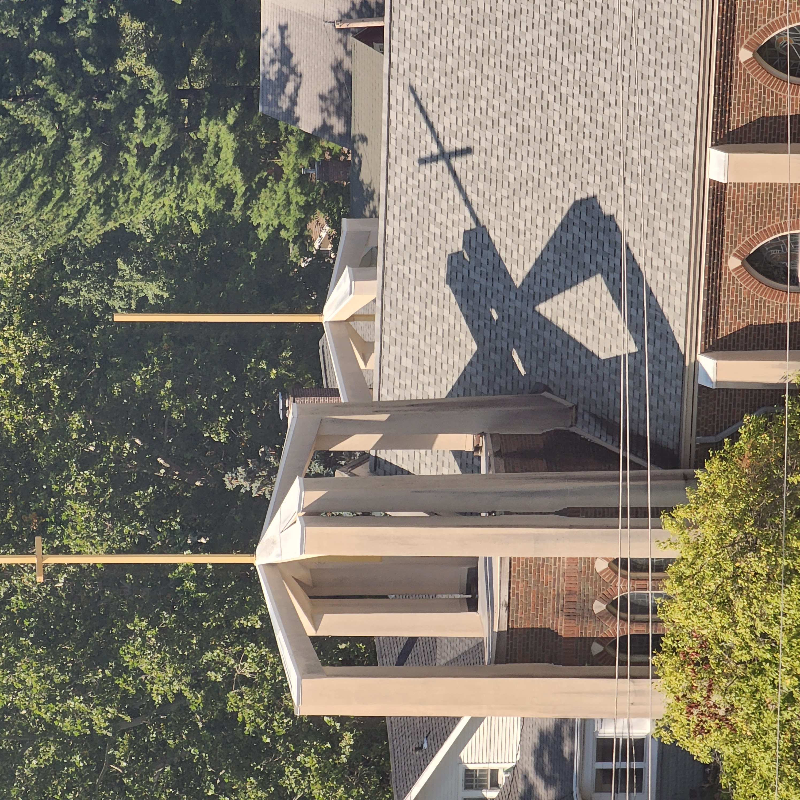
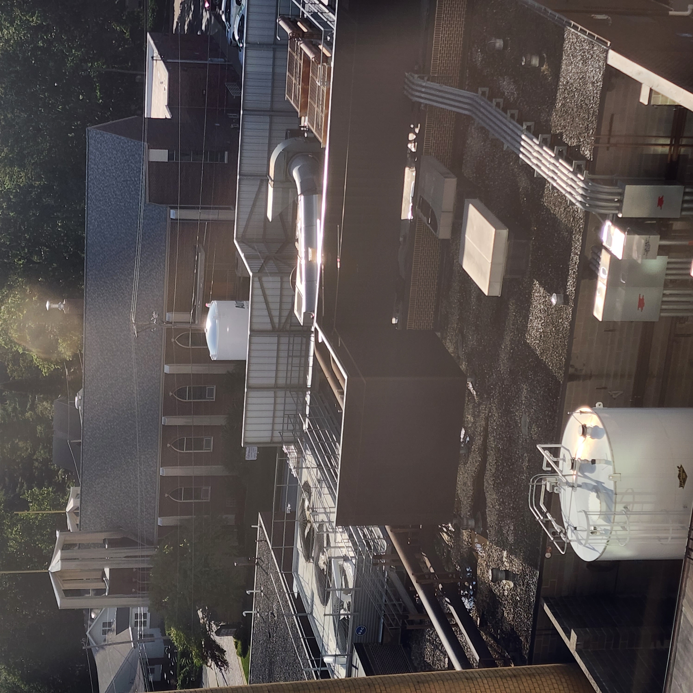
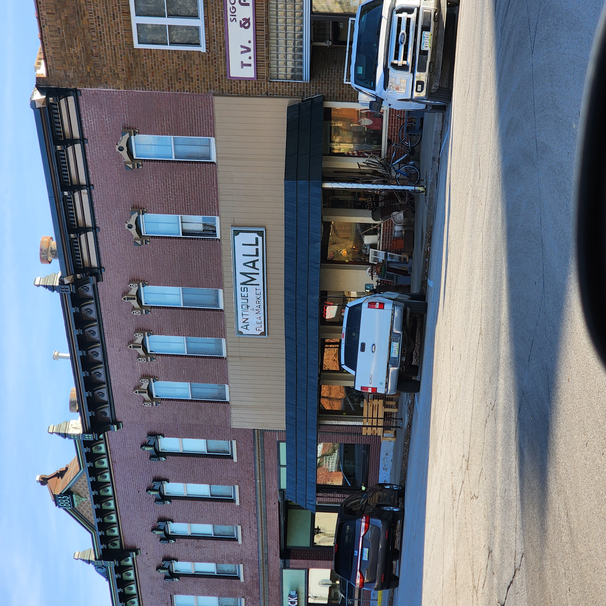
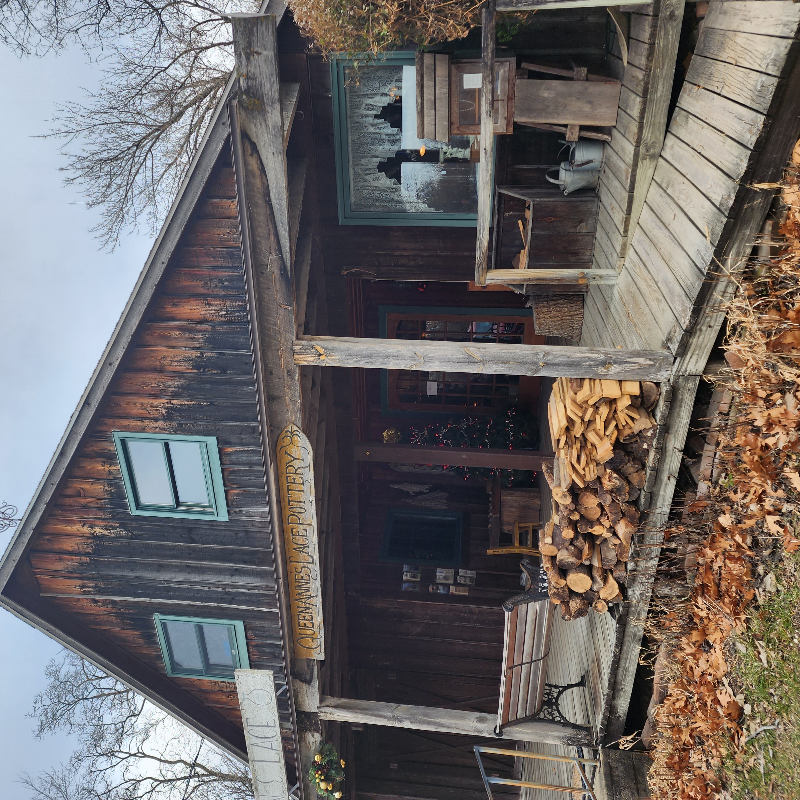
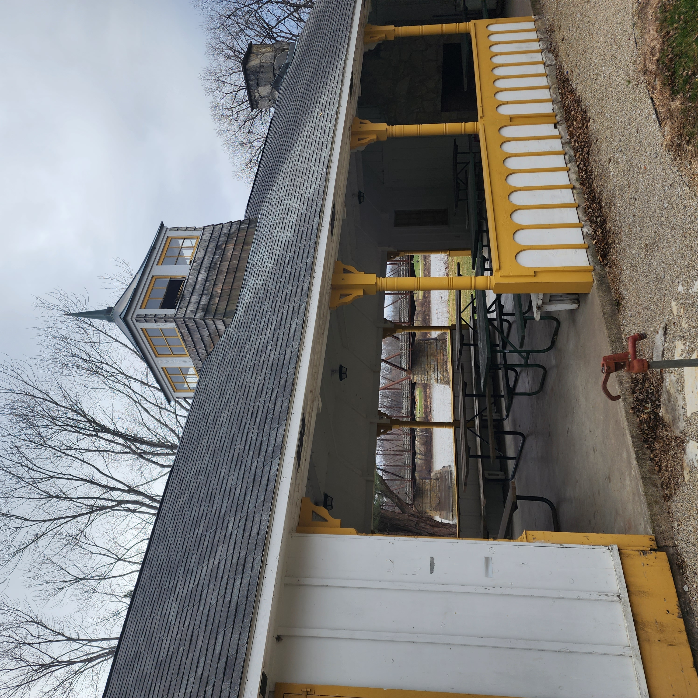

One morning, while making a delivery for RiverBend Food Bank, I ended up in Annawan Illinois.
I was waiting for someone to meet me for the pickup, as the address I was dispatched to was
incorrect. I got bored while waiting, and saw these big silos in the distance.
I took a picture. A few days later I took another photo at another location. It just happened
to be 9am.
The 9am Project began as a simple idea: capture the world at the same moment every day, at 9am!
Originally, it focused on photographing silos — tall, quiet structures that stand against
the sky like markers of time. What started as a creative experiment slowly became a ritual,
a way to pause, breathe, and notice the world.








Some of the original 9am photos.
New photos will be added here — indoor, outdoor, outer space, anything that fits the spirit of 9am.